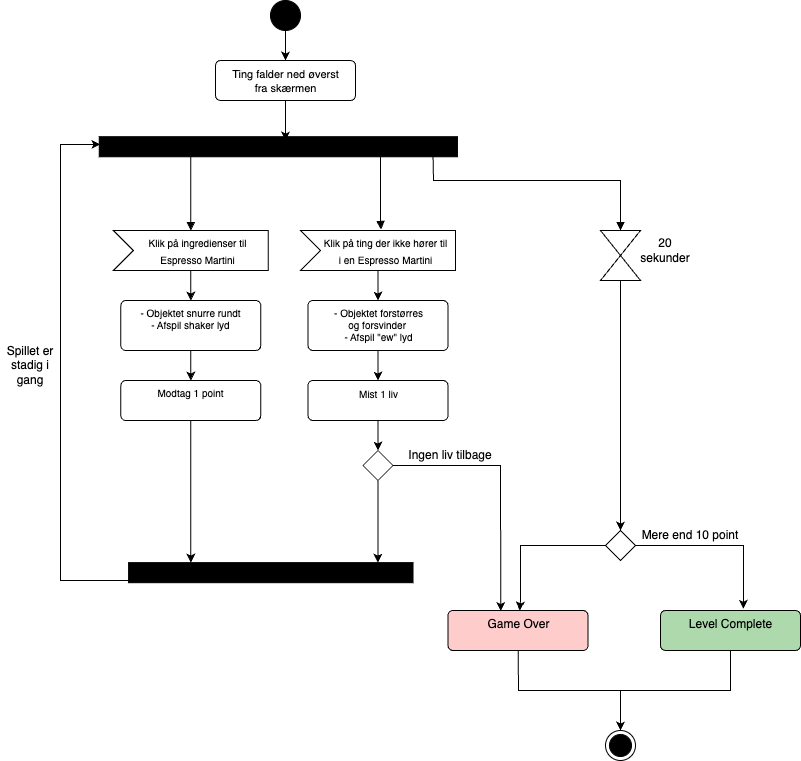
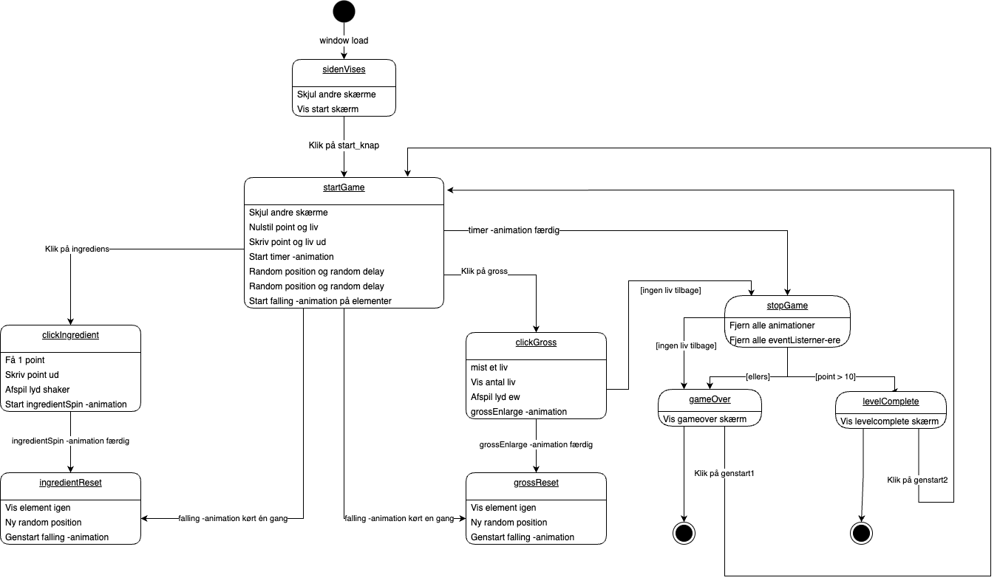

Teknik
Activity diagram
The activity diagram visually shows how the game progresses. It illustrates the various actions and activities that occur in the game and how they are connected. The diagram helps to understand the game's flow, the steps taken, and their relationships throughout the game's course.
This is mine for my game:

State machine diagram
The State Machine diagram shows how the JavaScript code is organized. It highlights the various states the code can enter and the transitions between them. This diagram helps explain how the code reacts to different inputs and scenarios, as well as how it changes states during the program's runtime.
This is mine for my game:
